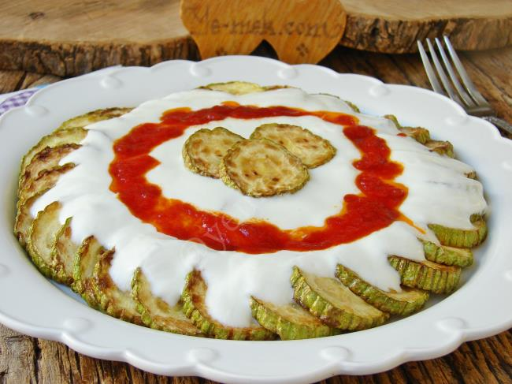

Yemek Tariflerine Hoş Geldiniz
Yoğurlu Kabak Salatası
Malzemeler
- 3 adet kabak
- 2 yemek kaşığı zeytinyağı
- 1,5 su bardağı süzme yoğurt (veya normal yoğurt)
- 2 diş sarımsak
- Tuz
Üzeri İçin
- Zeytinyağı, pul biber, dereotu
Yapılışı
- Kabakları yıkayıp rendeleyin.
- Tavaya zeytinyağını alın, kabakları ekleyip suyunu salıp çekene kadar kavurun.
- Ocaktan alıp soğumaya bırakın.
- Yoğurdu bir kaba alın, ezilmiş sarımsak ve tuzu ekleyip karıştırın.
- Soğuyan kabakları yoğurtlu karışıma ilave edin, iyice harmanlayın.
- Servis tabağına alın. Üzerine biraz zeytinyağı gezdirin, pul biber ve ince doğranmış dereotu serpin.
👉 İsteğe göre ceviz içi de ekleyebilirsiniz, çok yakışır.